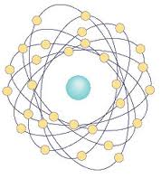
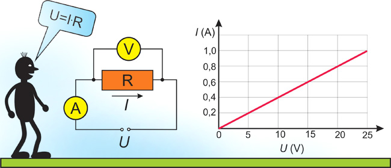
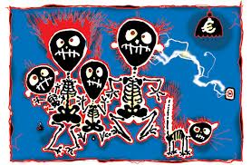
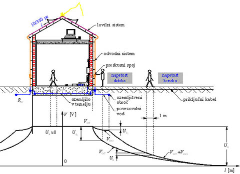

1. SPLOŠNO O ELEKTRIKI:
Električna energija je velika pridobitev modernega časa, ki je človeku omogočila velik napredek v razvoju in pa seveda precej bolj udobno bivanje. Postali smo odvisni od elektrike, saj si življenja brez te dobrine več ne moremo predstavljati. To bi predstavljalo popolnoma drugačen način življenja, kot ga sedaj poznamo. Če zmanjka elektrike samo za kako uro, postane to za ljudi zelo neprijetno, saj povsod uporabljamo vse mogoče naprave, ki brez elektrike sploh ne delujejo. Kljub vsemu obstaja na svetu še peščica ljudi, ki sploh ne poznajo elektrike in tako “uživajo” prvinsko življenje.
Elektrika je naravna lastnost snovi, atom ki je najmanjši delec snovi sestavljajo jedro in elekroni, med katerimi delujejo sile, katerih vzrok je elektrina. Poznamo pozitivno in negativno elekrino, ki se med seboj privlačita, razlika med njima nam definira naelektrenost snovi.

Če povežemo dve točki z različno elektrino s prevodno snovjo, dobimo usmerjeno gibanje elekronov oziroma električni tok,(I) napetost med tema dvema točkama pa se imenuje električna napetost (U). Enota za merjenje jakosti električnega toka se imenuje Amper (A), enota za merjenje električne napetosti pa se imenuje Volt (V).
Poznamo enosmerni in izmenični električni tok, tako kot je tudi el. napetost istočasno enosmerna ali izmenična. Jakost el. toka ki steče skozi neko snov je odvisna od velikosti napetosti in upornosti (R) te snovi, manjša kot je upornost večji je el. tok skozi to snov. Snovi z zelo veliko upornostjo imenujemo izolatorji, snovi z srednjo upornostjo so polprevodniki, med tem ko so znovi z malo upornostjo prevodniki.
Upornost merimo z enoto Ohm. Medsebojno odvistost imenujemo Ohmov zakon (I=U/R).

Enota ki nam pove, koliko el. toka steče pri neki napetosti, se imenuje el. Moč (P) in jo merimo z osnovno enoto (W), energijo ki jo neka naprava potroši pa merimo v (kWh).

Nevarnosti zaradi električnega toka:
- poškodbe zaradi dotika naprav ali vodov pod el. napetostjo, opekline, nepravilno delovanje srca, poškod znotraj organov v človeškem telesu
- požari
- eksplozije
Višina el. napetosti v stanovanjskih in poslovnih zgradbah je od 230V do 400V, v industriji se lahko srečamo tudi s napetostmi do 600V. Napetosti na daljnovodnih omrežjih pa so cello od 1kV do 380kV.
Vpliv izmeničnega el. toka na telo so odvisni od jakosti le tega in sicer:
0,005mA čutimo na jeziku rahel pekoč občutek
1,2mA se čuti že s prsti
2-3mA prisotno je močno drhtenje prstov
12-15mA prisotne so močne bolečine v prstih, rokah, težko je ločiti roke od mesta dotika
20-25mA pride do paralize rok, bolečine so že zelo močne, dihanje je oteženo
50-80mA paraliza dihanja, začetek fibrilacije srca, aritmija, nezavest
80-100mA paraliza dihanja, paraliza bitja srca, smrt
nad 3000mA paraliza dihanja, srca, poškodbe tkiva-ožganine zaradi el. toka
Izmenični el. tok večji od 30mA in 50V el. napetosti je nevarno za človeško življenje.
Naprave ki za svoje delovanje potrebujejo elektriko, imenujemo enostavno "električne naprave". Delimo jih glede na:
1. napetost:
- malo napetost do 50 V izmenične napetosti, oz do 120 V enosmerno
- nizko izmenično napetost od 50 do 1000 V (najpogosteje 230 V enofazne naprave in 400 V trifazne naprave)
- nizko enosmerno napetost od 120 do 1500 V
- srednjo izmenično napetost, 1000 V ali več, napr. v industriji
2. vrsto toka:
- izmenične naprave
- enosmerne naprave
3. po številu faz:
- enofazne naprave
- trifazne naprave
4. po frekvenci:
- 50 Hz
- naprave višjih frekvenc
Električne instalacije so naprave ki povezujejo elektične porabnike z napravami za proizvodnjo električne energije. Med njih spadajo vodniki, stikala, vtičnice, varovalke. Pri uporabi el. instalacij lahko pride do nesreče, katerih udeleženci lahko utrpijo hude poškodbe. Zaradi tega je potrebno pri uporabi izpolnjevati nekatere pogoje zaščite pred el. udarom.

Poskrbeti je potrebno usposobljenost oseb, ki bodo naprave uporabljali, zagotoviti zaščito pred posrednim in neposrednim dotikom naprav pod napetostjo. Pred prvo uporabo morajo biti tudi vse električne naprave v skladu z predpisi pregledane in preizkušene. V skladu s požarno varnostjo, morajo električne naprave biti napravljene iz materialov in na način da bistveno ne pripomorejo k širjenju požara po objektu. Pri nartovanju električnih instalacij je potrebno poskrbeti za pravilno dimenzioniranje el. vodnikov , pravilno dimenzioniranje in izbiro varovalk, ter FID stikal. FID stikalo je naprava ki nam v delčku sekunde izklopi električno omrežje, če na tok steče po napačni poti. El. omrežje prekine tudi ko električni tok preseže mejno vrednost.
2. VARNOSTNI UKREPI PRI GAŠENJU V BLIŽINI ELEKTRIČNEGA OMREŽJA
Pri gašenju v bližini električega omrežja moramo zagotoviti primerno oddaljenost gasilcev od naprav pod električno napetostjo, polek tega morajo imeti gasilci primerno obutev ki jih dodatno ščiti pred električnim udarom. Gasilno sredstvo mora biti primerno izbrano glede na vrsto požara in velikost električne napetosti. Obvezno je potrebno zagotoviti odklop gorečega objekta ali naprave iz električnega omrežja. Pri gašenju naprav podelektrično napetostjo, je potrebno da posredovalci posedujejo primerno znanje na tem področju.
3. NEVARNOSTI ZA GASILCA PRI GAŠENJU NAPRAV POD ELEKTRIČNO NAPETOSTJO
Pri gašenju naprav pod električno napetostjo se je potrebno še posebaj izogibat dotika delov naprav na katerih se je raztopila izolacijska zaščita. Pri omrežjih visokih napetosti je potrebno biti še posebej pozoren na možnost električnega preskoka. V primerih kot napr. padec visokonapetostnega vodnika, lahko pride do napetosnega lijaka od točke dotika vodnika z zemljo na vzven. Upoštevati je treba tudi možnost sklenitve tokoroga z gasilom preko telesa gasilca.

4. GAŠENJE NAPRAV POD ELEKTRIČNIM TOKOM
Praviloma se naprave pod električno napetostjo ne gasi, v kolikor je posredovanje gasilcev potrebno preden je možen odklop, je potrebno upoštevat vse varnostne ukrepe za gašenje naprav pod in v bližini električne napetosti.
Oddaljenost potrebna za gašenje naprav pod el. napetostjo z različnimi gasilnimi sredstvi:
| Tip gasila/Energetska naprava | Do 1000V AC Do 1500V DC |
Nad 1000V AC Nad 1500V DC |
| Z ročnikom na vodno meglica do 5bar | 1 m | 5 m |
| Z ročniko na vodni curek do 5 bar | 5 m | 10 m |
| Z gasilnikom na prah | 1 m | 3-5 m |
| Z gasilnikom na CO2 (samo v zaprtih prostorih) | 1 m | 3-5 m |
| Z gasilnikom na peno | 1 m | / |
Uporaba vode za gašenje delov pod napetostjo je pogojno dovoljena, če gasimo na prostem in upoštevamo predpisano najmanjšo razdaljo po zgornji tabeli. V tabeli prikazane zahteve za odmike veljajo za standardni večnamenski C-ročnik z ustnikom pri pritisku do 5 barov. Pri višjem pritisku ali večjem pretoku – posebej pri uporabi ročnika B ali vodnega topa – so zahtevani večji odmiki! Ročniki, ki jih želimo uporabiti za gašenje delov pod napetostjo, morajo imeti dokazilo, da so uporabni v te namene (nem. »Zulassung«)! Gasilci morajo pri gašenju delov pod napetostjo zraven zadostnega odmika ročnika od delov pod napetostjo paziti še na razlito gasilno vodo, če bi se lahko po njej premostili deli pod napetostjo in stojni položaj gasilca! Za drugačne ročnike je potrebno preveriti navodila o uporabi, ki jih je dolžan izdati proizvajalec! Za druga gasilna sredstva veljajo drugačni pogoji in razdalje! Gašenje z gasilno peno je dovoljeno le pri napravah, ki niso pod napetostjo!
5. GASILSKA INTERVENCIJA
- Začetni požar na NN napravi
- Odklopiti napravo iz omrežja
- Požar gasiti z najprimernejšim gasilnim sredstvom
- Požar stanovanjskega objekta
- Zahtevati odklop s strani pooblaščenega podjetja
- Gašenje s primerne razdalje in primernim sredstvom
- Ob vstopu v prostor paziti na naprave pod napetostjo, paziti na primerno zaščito gasilca
- Požar VN naprav
- Zahtevati odklop s strani pooblaščenega podjetja
- Gašenje s primerne razdalje in primernim sredstvom
- Paziti na nevarnost napetostnega lijaka
- Reševanje ponesrečenca pri nesreči z električnim tokom
- Zahtevati odklop s strani pooblaščenega podjetja
- Najhitreje kot je mogoče odstraniti vir el. toka (paziti na svojo varnost- uporabiti je potrebno neprevodne pripomočke za odmik npr. vodnika)
- V kolikor ni možno odstraniti vira odstarnimo ponesrečenca (s pomočjo kavlja, droga…)
- Ko smo odstranili vir, ponesrečencu najhitreje nuditi PP in če je potrebno TPO in ob enem obvestiti NMP
- Ob posredovanju na objektu, ni priporočena uporaba električnih virov za napajanje naprav posredovalcev, iz objektov pri katerih posredujemo.
- V kolikor ne gre drugače je obvezna uporaba ločevalnih varnostnih stikal
- Potrebno je poznavanje elektro-agragata, ki ga enota uporablja. Vedeti je treba predvsem kdaj je potrebna ozemljitev agregata in kako se to pravilno napravi.
Vir: splet, www.gasilec.net, elektrika v gasilstvu